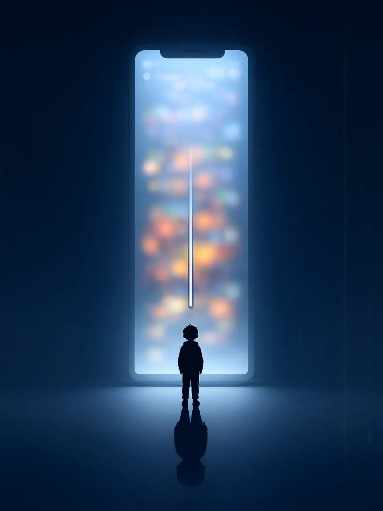
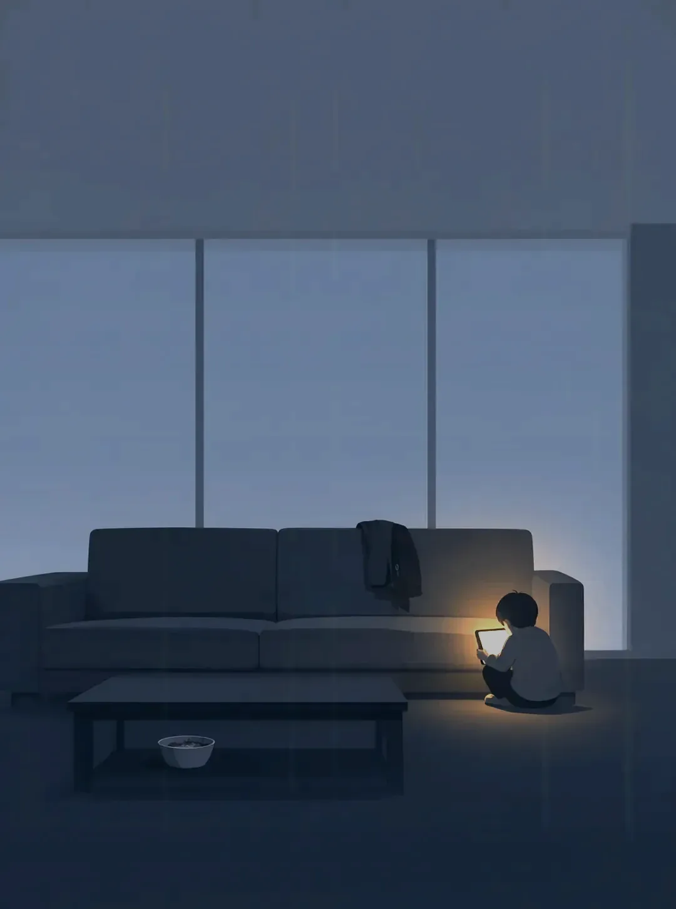
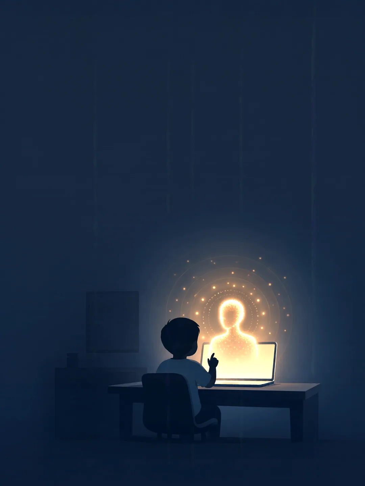
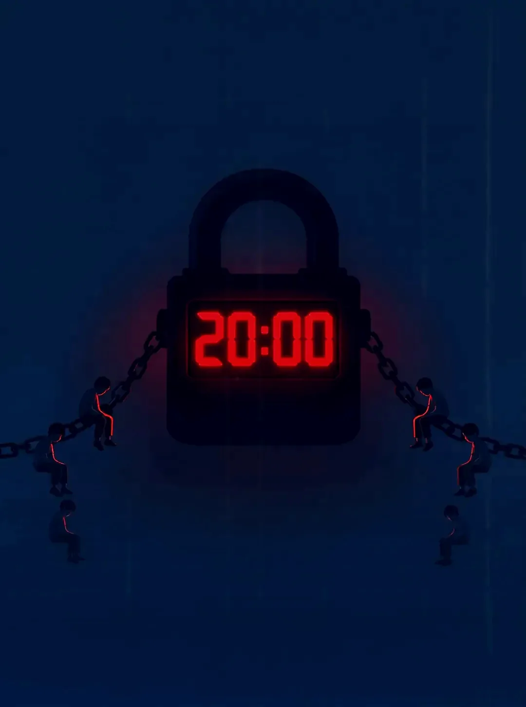
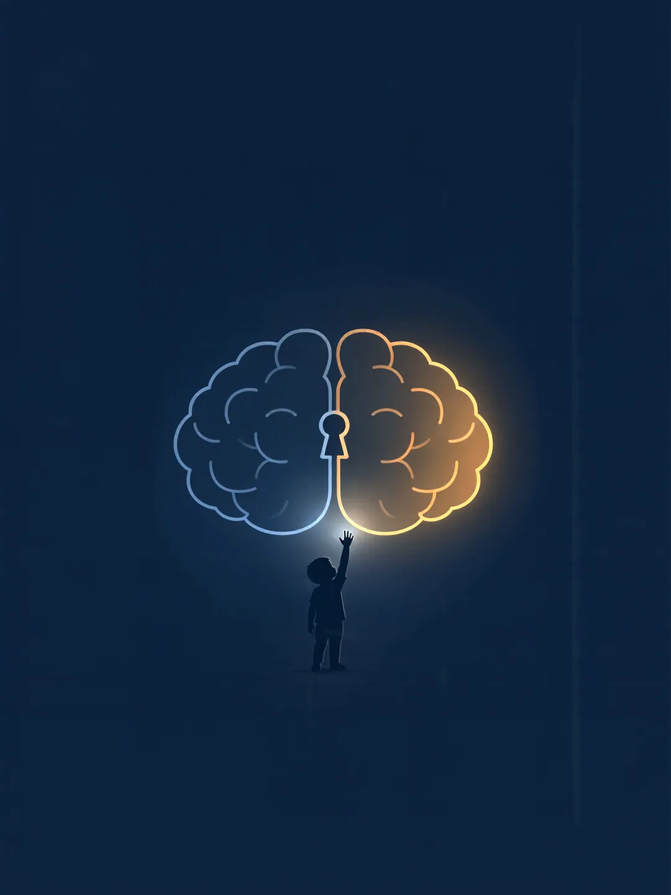
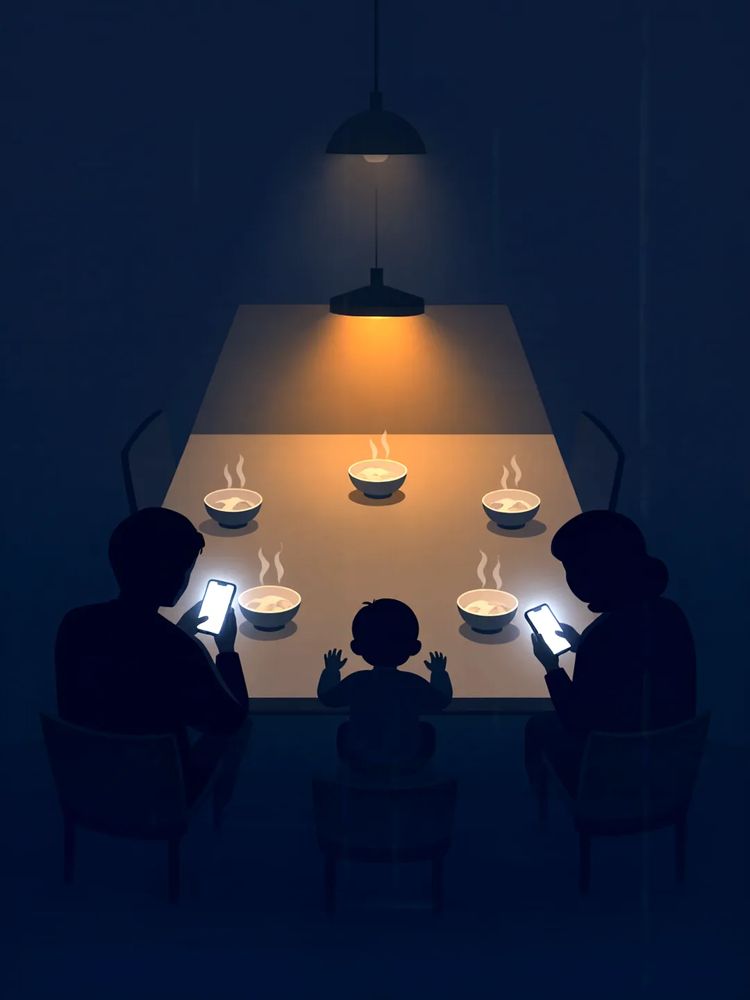
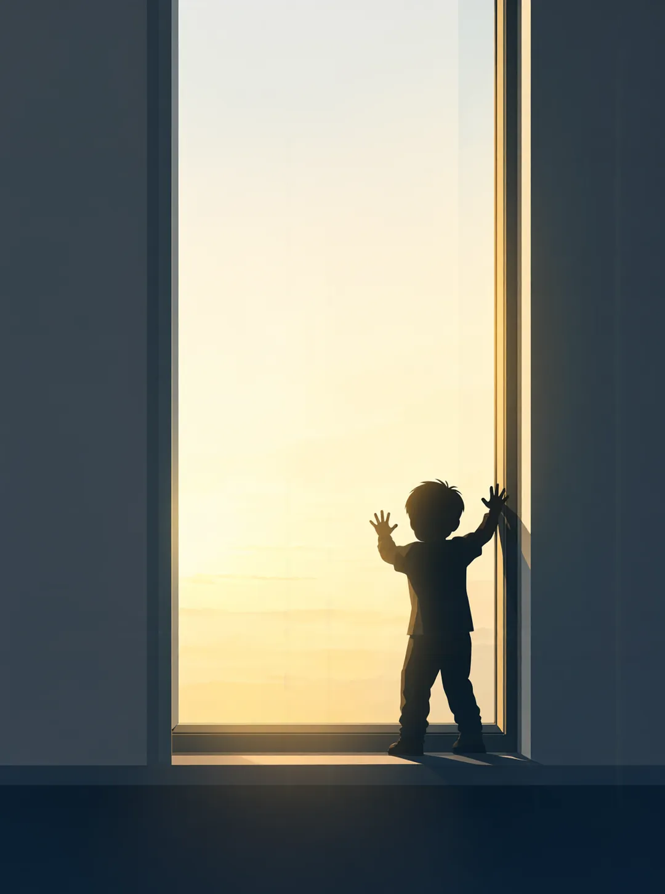

网络评论 · 未成年人网络保护
孩子需要的
不是"防沉迷"，
是"会用网"

一个很常见的晚上
客厅的灯亮着，人却不在。沙发上搭着没人穿的外套， 茶几上的饭已经凉了。
角落里，一个孩子蜷着，抱着发光的屏幕——
那是这个房间里唯一的光。
这样的画面，很多家长都见过。所以我们才习惯了把它叫作"沉迷"。

先把事实摆清楚
0%
未成年人已经用过 AI 工具
据《青少年蓝皮书：中国未成年人互联网运用报告（2026）》
（2026 年 10 月发布），超 75% 的未成年人使用过 AI，
知晓率达 93.7%；10 岁及以前首次触网的占 67.2%。
这已经不是"要不要上网"的旧命题，而是"如何在浪潮里安全长大"的新考题。
而大人习惯的解法
设个时长，
把手机收走
打开青少年模式，设一个每日额度，到点锁屏—— 这套动作，很多家庭做得已经很熟练了。
它有用。但它只管住了一件事：时间。

但是
这把锁，
究竟锁住了什么？
它锁住了时长，
锁不住他为什么逃进屏幕里。
如果把"沉迷"当成病
我们治的
从来只是症状
- 01他是在逃避，还是在寻找？
- 02真实世界里，哪里让他觉得"我在这里是重要的"？
- 03关掉屏幕之后，他手里还剩什么？

一字之差
"防"和"会"
是两个世界
防沉迷的逻辑是"堵"——设一道墙，让他进不去。
会用网的逻辑是"疏"——给他一套本事，让他进得去、出得来、看得清。
墙挡得住一时，挡不住他长大。能陪他走远的，是本事。
那么"会用网"，到底是什么
不是不碰，
是碰了之后能判断
- 看 看得懂。知道一条信息从哪来、为谁说话、有没有被剪过。
- 说 说得清。表达观点，也承受别人不同意；不躲在昵称后面伤人。
- 放 放得下。能自己决定什么时候关掉，而不是被推着一直滑下去。

这件事，孩子一个人做不到
大人先得
会用自己的网
孩子不看你设了几道锁，他看你怎么用。 你在饭桌上刷手机，他就学会了用屏幕躲开一桌人。

一网同心筑文明
把互联网这个"最大变量"，
变成孩子成长的"最大增量"。
先给他一扇
能推开的窗
锁只能让光留在外面；他要的是知道怎么走出去，也怎么回来。
网络评论作品 · 参评"蔚然新滁州"2026滁州市第六届网络评论大赛
主题：一网同心筑文明
本作品为图文交互式网页（H5）。插画部分由人工智能生成， 文字内容为作者原创撰写。依据《人工智能生成合成内容标识办法》，特此标识。
© 2026 本作品著作权归作者所有